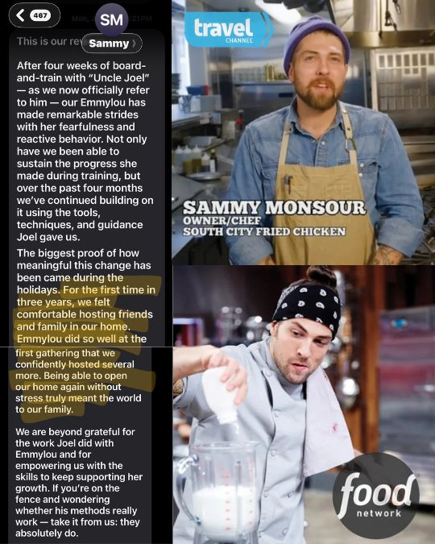

After four weeks of board-and-train work, followed by continued coaching and follow-through at home, Sammy's family was able to comfortably host people again without the stress ruling their life.
Free 50-minute consult
When your dog's behavior feels serious, confusing, or bigger than a course, start here.
Book a free 50-minute consult with Joel and talk through what is actually happening with your dog.
You will leave knowing what Joel thinks is going on, what he would do next, and which training path makes the most sense.

Free 50-minute consultTalk directly with JoelClear next stepNo pressure call
Before you book
All dogs and their owners are individuals. Their solutions need to be as well.
Some dog problems are too emotional, too urgent, or too complicated for you to guess your way through.
- Tell Joel what is happening in real life.
- Joel asks questions to find the pattern behind the problem.
- You leave with the next path: DDS, Fix the Walk, private coaching, or something else.
If one of Joel's programs is the right fit, he'll tell you. If it is not, he'll tell you that too.
Watch before you book
Watch this before you book.
If your dog's situation feels complicated, this will help you understand how Joel thinks through behavior, safety, training, and the right next step.
Who this is for
Book this if...
- Your dog has bitten, fought, guarded, panicked, or escalated.
- You have already tried training and still feel stuck.
- You are not sure which program fits.
- You are worried about making the wrong move.
- Life with your dog feels more stressful than it should.
What you leave with
You do not need another vague opinion.
You need to know what is happening, what matters most, and what to do next.
By the end of the call, the goal is simple: a clearer understanding of your dog, your situation, and the training path that makes sense.
Premium proof
Real cases. Real dogs. Real follow-through.
These are the kinds of situations where a generic plan is not enough.
{kind=link}

After previous training left the dog shut down, Andrea saw her dog's personality, confidence, and progress return, including successful work around other dogs in a new place.
Luna's case is a longer-path emotional recovery story for owners who have been told there is no way forward.
The behavior lens
The Trust to Train Relationship Reset.
This is the lens Joel uses to understand complicated behavior without over-explaining it into another wall of text.

Why talk to Joel?
Why talk to Joel?
Joel Harrison is the founder of Scoob & I Dog Training. He has personally trained 1,000+ dogs and helped clients in person and around the world with reactivity, aggression, anxiety, pulling, over-arousal, and dogs that made normal life feel impossible.
Joel's job is to help you figure out what is actually going on and what to do next.
Ready to stop guessing?
Book a free 50-minute consult with Joel.
Tell him what is happening with your dog, and he'll help you figure out the next right move.
Book a Free Consult